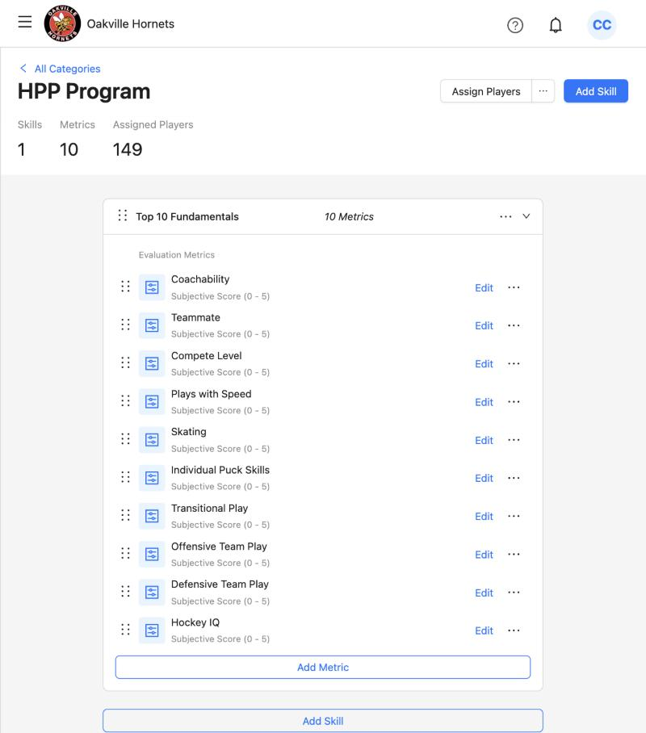
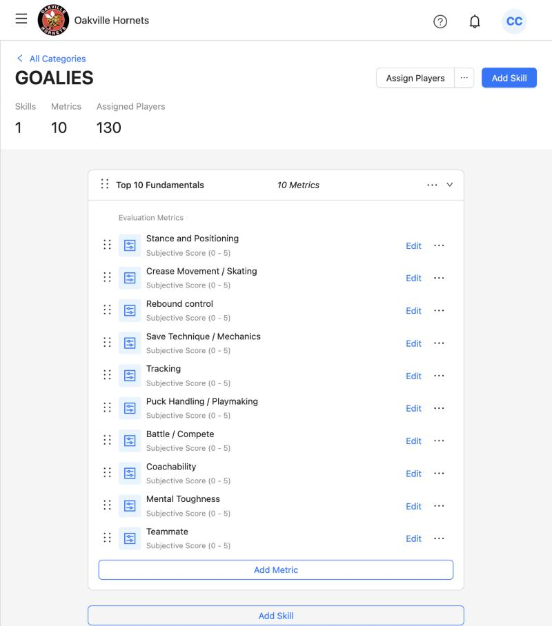

Our association (Oakville Hornets) evaluates every player in SkillShark. Each player is scored on the same set of metrics, using shared written definitions, so ratings mean the same thing no matter which evaluator gives them. Skaters are evaluated with the HPP Program template and goalies with the GOALIES template. Both use a "Top 10 Fundamentals" skill with ten metrics.
Skaters: HPP Program
Top 10 Fundamentals: ten metrics, each a subjective score from 0 to 5.
Goalies: GOALIES
Top 10 Fundamentals built for goaltending: ten metrics scored 0 to 5 in half-point steps.
When
Start of season, midseason and end of season, so each player's progress can be compared over time.
Privacy
Only the evaluation templates are shown here. Individual player scores stay in SkillShark and are shared with players and families directly.
Rating Anchors
1Rarely demonstrates this quality (well below age expectations)
2Sometimes shows ability but inconsistent
3Meets age-level expectations
4Consistently strong in this area, above average
5Elite for this age group, a difference-maker
Skaters: HPP Program Template
The ten metrics evaluators score for every skater, with our association's definition for each.

1
Coachability
Subjective Score (0-5)
Willingness to learn, adapt, and apply feedback consistently.
Demonstrates openness to instruction and makes adjustments quickly in practices and games.
Shows respect for teammates and staff by listening, asking questions, and staying engaged.
Displays discipline in executing team systems and responsibilities. Maintains a positive attitude, resilience, and growth mindset when challenged.
Consistency in effort and response to feedback makes the player dependable and trustworthy in all situations.
2
Teammate
Subjective Score (0-5)
Shows humility and puts team success above individual recognition.
Communicates clearly on and off the ice, building trust through reliability and accountability.
Supports teammates by encouraging, celebrating successes, and lifting others during challenges.
Demonstrates respect, unselfishness, and commitment to shared goals. A strong teammate positively impacts culture, strengthens cohesion, and makes those around them better.
3
Compete Level
Subjective Score (0-5)
Engagement in battles.
Ability/willingness to win battles.
Working hard with and without the puck.
Physicality with and without the puck.
Strength in battle situations regardless of size (balance and stability on skates).
Work ethic.
Works to get to open spaces, net drives, body positioning.
Consistency of effort.
4
Plays with Speed
Subjective Score (0-5)
Executes plays at high pace.
Advances puck to open players.
Chips, indirect passes to open spaces for teammates to skate into.
Decision making: knows what to do before getting pressured.
Allows team to create/maintain speed with their decisions.
Keeps feet moving with the puck.
Can create opportunities/shots for themselves and others at a high pace.
Edges: ability to use edges/flats for varying situations.
Speed: includes 1st step acceleration, top end speed, change of pace, ability to create separation.
Transition: ability to change direction.
For D: lateral agility, transition, change of direction, backwards power, ability to be evasive/elusive, create shooting lanes for themselves through their skating.
For Fwds: small space quickness, open ice power, explosive speed.
6
Individual Puck Skills
Subjective Score (0-5)
Pass, pass receive: both forehand and backhand.
Puck protection. Shot: strength in shot, ability to get it off quickly, variety of shots, ability to shoot in stride, hits the net/not blocked.
Deceptive ability through fakes, dekes, buying time with the puck. Net drive with puck protection, power forward.
Hand eye coordination.
Playmaking ability.
7
Transitional Play
Subjective Score (0-5)
Quick recognition of turnovers and ability to move the puck efficiently from defense to offense.
Makes smart first passes or controlled carries under pressure.
Supports teammates by providing outlets and options for clean exits and entries.
Reads developing plays through the neutral zone, using speed and awareness to create odd-man opportunities or slow down opposing transitions.
Maintains composure under pressure, advancing possession while limiting risk.
Players who excel in transition keep the team moving forward, sustain pace, and create scoring chances by turning defense into attack.
8
Offensive Team Play
Subjective Score (0-5)
Ability to see play developing.
Puck support.
Ability to see open ice (either for chipping pucks to teammates or to move to open ice to receive puck).
Ability to create scoring chances for themselves and teammates.
Being a threat to shoot or pass.
Team possession continues because of this player.
9
Defensive Team Play
Subjective Score (0-5)
Strong positioning and awareness; stays between opponent and net.
Active stick to disrupt passing and shooting lanes.
Maintains good gap control without overcommitting.
Communicates effectively in coverage and provides support.
Executes defensive zone responsibilities: boxing out, net-front battles, crease protection, and winning pucks under pressure. Retrieves and exits with composure, making smart first passes to transition play.
Applies consistent back pressure, tracks through the neutral zone, and disrupts rushes. Blocks shots, uses disciplined physical play, and avoids unnecessary penalties. Trusted in key moments for reliability and consistency.
10
Hockey IQ
Subjective Score (0-5)
Poise in decision making in pressure situations.
Vision: making reads before getting the puck.
Anticipation: both offensively and defensively.
Head on swivel.
Decisions allow team to maintain possession of puck or to get possession of puck.
Spatial awareness.
Use of stick to cover passing/shooting skating lanes.
Use of stick to create turnovers (stick on puck).
Goalies: GOALIES Template
Goalies have their own ten fundamentals, scored in half-point steps so smaller improvements in technique show up between evaluations.

1
Stance and Positioning
Subjective Score (0-5, half-point steps)
How the goalie positions themselves relative to the puck.
Angle: Maintains middle net coverage relative to the puck.
Square: Shoulders, hips, and toes stay aligned and facing the puck.
Depth: Adjusts positioning in and out of the crease based on play location and pressure.
Moves efficiently around the crease in an athletic stance with gloves out and stick covering the five-hole; relaxed when play is on the periphery, active and engaged when play is in tight.
2
Crease Movement / Skating
Subjective Score (0-5, half-point steps)
Power, balance, and efficiency with all movement types; quick, controlled transitions with minimal excess motion.
Feet to Feet: C-cuts, shuffles, and T-pushes, staying in stance with head and hands forward.
Feet to Knees: Dropping into butterfly and slides.
Knees to Knees: Pushes in their butterfly.
3
Rebound Control
Subjective Score (0-5, half-point steps)
Absorbs shots into the body or directs pucks to the corners and low-danger areas.
Uses stick, pads, and blocker to minimize second-chance opportunities; catches pucks cleanly.
Reacts quickly to loose pucks and covers the puck when necessary.
Expected on low-danger shots; on high-danger shots the focus is tracking, recovering, and reacting after the first save.
4
Save Technique / Mechanics
Subjective Score (0-5, half-point steps)
Executes foundational saves: butterfly, glove, blocker, stick, and post integrations (RVH / post lean).
Maintains posture and balance while moving efficiently into the puck, staying controlled and on angle.
Reads the play to select the right save and executes with precision, timing, and control.
5
Tracking
Subjective Score (0-5, half-point steps)
Maintains visual focus on the puck throughout the play.
Tracks pucks into the body to make the initial save and follows the puck out to locate rebounds.
Shows awareness and determination finding pucks through traffic or screens.
6
Puck Handling / Playmaking
Subjective Score (0-5, half-point steps)
Stops pucks shot in from distance, handles rims cleanly on forehand and backhand.
Breaks up passes through the crease and clears pucks around the net under pressure.
Makes accurate outlets, knows when to hold or move the puck, and communicates with the D on retrievals.
Criteria scale by age: U9-U11 control and cover pucks; U13 stop rims and clear; U15+ all criteria including breakouts and transitions.
7
Battle / Compete
Subjective Score (0-5, half-point steps)
Competes on every shot and stays focused through drills, practices, and games.
Makes second-effort saves and fights through traffic, screens, and contact.
Never gives up on pucks; competes with urgency in scrambles and rebounds.
8
Coachability
Subjective Score (0-5, half-point steps)
Willingness to learn, adapt, and apply feedback consistently.
Demonstrates openness to instruction and makes adjustments quickly in practices and games.
9
Mental Toughness
Subjective Score (0-5, half-point steps)
Focus, confidence, and composure in all situations.
Resets quickly after goals or mistakes and stays calm regardless of score or crowd.
Resilient when challenged; communicates positively and handles adversity with maturity.
10
Teammate
Subjective Score (0-5, half-point steps)
Shows humility and puts team success above individual recognition.
Supports teammates after goals against and helps stabilize the group.
Actively supports their goalie partner, with the same attitude whether playing or on the bench.
How the Evaluation Feeds Physical Preparation
Several metrics reflect physical qualities. When a player or the team scores low in these areas, the physical preparation program adds targeted work, and the next evaluation shows whether it helped.
Metric
Who
Physical qualities it reflects
Physical prep response
Skating
Skater
Speed, acceleration, agility, edges, transitions
Speed and agility blocks, edge and transition work in warm-ups
Plays with Speed
Skater
Speed, repeat-sprint ability
Short, high-intensity intervals and full-recovery sprint work
Compete Level
Skater
Strength, balance and stability on skates, work capacity
Lower-body and core strength, battle drills with controlled work:rest
Crease Movement / Skating
Goalie
Lateral power, hip mobility, balance
Lateral power, hip and groin mobility, butterfly recovery conditioning
Battle / Compete
Goalie
Work capacity, repeat-effort recovery
Repeat-save conditioning and recovery between reps
Mental Toughness / Coachability
Both
Readiness, recovery habits, response to training
Wellness check-ins, sleep and nutrition habits, load adjustments
Bottom line: the same SkillShark metrics are scored at the start, middle and end of the season, so every player has a clear baseline, a target, and evidence of progress.